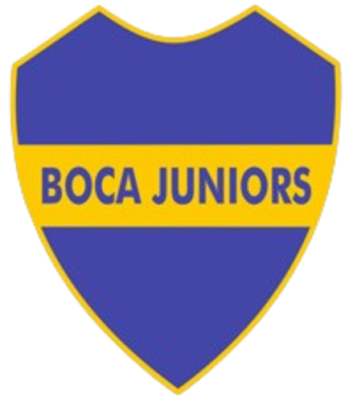
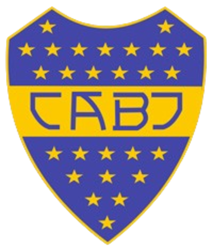

1915

En 1915 Boca Juniors adoptó un nuevo escudo que marcaría un antes y un después en la identidad visual del club. A diferencia del primer emblema, este diseño tenía la forma heráldica que, con diferentes modificaciones, se mantendría durante el resto de la historia.
El escudo tenía un fondo azul atravesado por una franja amarilla horizontal en el centro. En ella aparecían las iniciales "CABJ", aunque durante diferentes períodos también se utilizaron las inscripciones "C. A. Boca Juniors" y "Boca Juniors".
Este diseño todavía no tenía estrellas. La idea de representar los títulos obtenidos por el club mediante estrellas recién sería establecida oficialmente en 1932.
1932

El 18 de octubre de 1932, Boca Juniors resolvió que su escudo debía llevar estrellas representativas de los campeonatos de Primera División obtenidos por el club. También se estableció que podían incorporarse estrellas por otros acontecimientos deportivos de especial importancia.
Sin embargo, la aparición de las estrellas no fue inmediata. Aunque la resolución fue tomada en 1932 y comenzaron a aparecer en distintos objetos relacionados con el club, el primer registro documentado del escudo con estrellas en una Memoria y Balance institucional corresponde a 1943.
Durante las décadas siguientes, el escudo mantuvo su estructura fundamental, aunque sufrió pequeñas modificaciones en la tipografía, la forma y la cantidad de estrellas a medida que Boca sumaba nuevos títulos.
1996

En 1996 Boca Juniors realizó la última gran modificación de su escudo. El cambio estuvo relacionado con una renovación de la identidad visual del club y fue desarrollado durante la primera gestión de Mauricio Macri.
La modificación más visible fue la eliminación de la tradicional franja amarilla que atravesaba el centro del escudo. En su lugar, las iniciales "CABJ" pasaron a estar representadas directamente en color amarillo dentro del fondo azul.
El nuevo diseño conservó la forma característica del escudo y las estrellas como representación de los títulos del club. Desde 1996, esta versión se convirtió en la base de la identidad visual de Boca Juniors y es la que, con actualizaciones en la cantidad de estrellas, llega hasta nuestros días.